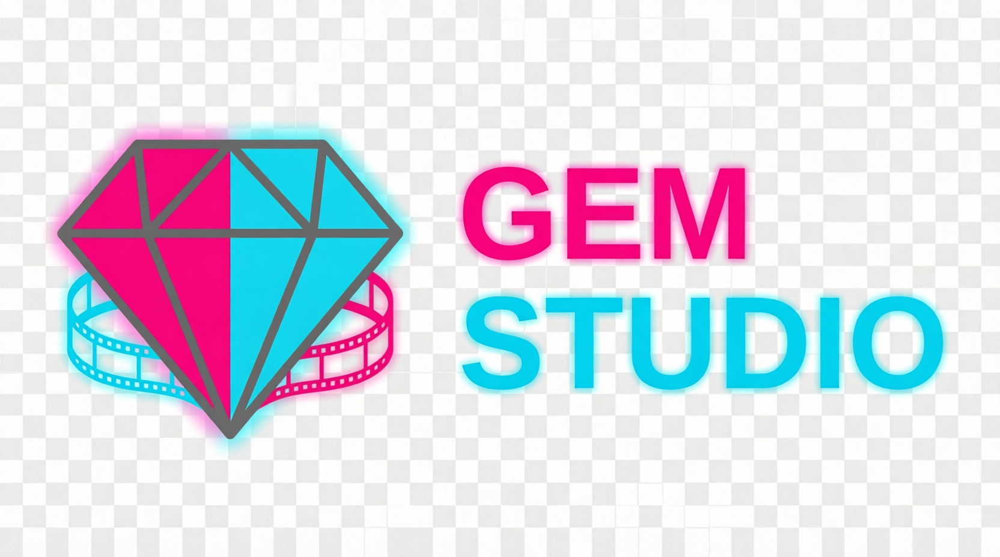

01
Marketing department
Find the angle.
Turn a loose brief into a point of view, a campaign shape, and a reason to keep watching.
- Campaign direction
- Audience signals
- Launch planning

Online AI film studio · Open for briefs
Gem Studio brings the thinking, making, moving, and sharing of a film into one connected creative floor.
The studio
Not a toolbox. A creative floor where every department can see what the next one needs before the handoff.
Marketing department
Turn a loose brief into a point of view, a campaign shape, and a reason to keep watching.
Creative department
Build the visual language, the world, and the strange little detail that makes a frame yours.
Production department
Generate, direct, refine, and finish the work without losing the original spark in the queue.
Social workshop
Cut the story into a living conversation: native formats, quick tests, and signals fed back into the next frame.
The handoff
Every brief carries its context forward. No black box between the thought and the finished frame.
“The handoff should feel less like a relay race and more like a shared nervous system.”
Signal room
The afterlife of a good frame.
A place to turn one piece of work into many points of entry—without sanding off what made it worth sharing.
Open signal board ↗Showing 3 signal cards
Seven seconds of atmosphere.
Short-form opening built from the visual tension, not a summary of the film.
Ask the question the frame leaves open.
Prompts that invite a point of view instead of asking for an empty reaction.
Keep what the audience notices.
Responses become creative inputs for the next treatment, cut, or world.